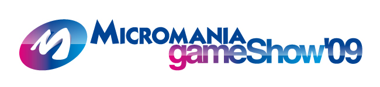

🏠 首頁
📁 SEGA 遊戲討論區
MGS遊戲展 SEGA參展遊戲
👤 binyi
🕐 2009-10-06 08:54:31
法國遊戲展Micromania Game Show，舉行時間為10月30日至11月2日，目前已初步釋出各廠商的參展遊戲列表，[float=right]

附件: mgs2009-logo.jpg
[/float]
*SEGA將展出四款作品：
－Alien versus Predator
－Bayonetta
－Mario ＆ Sonic at the Olympic Winter Games
－Sonic ＆ SEGA All-Stars Racing
…
[更多廠商參展列表]
*攤位示意圖
附件: map.jpg
請隨時鎖定本站日後的最新情報囉～